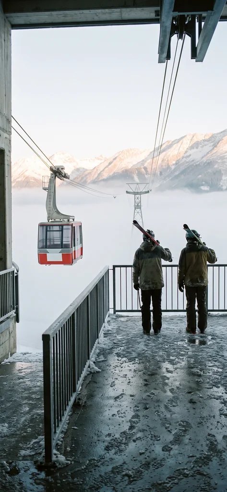
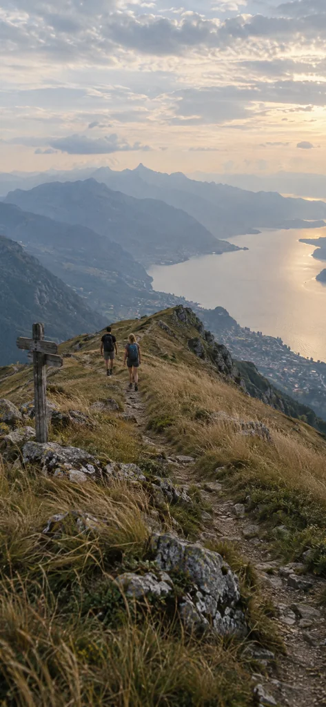
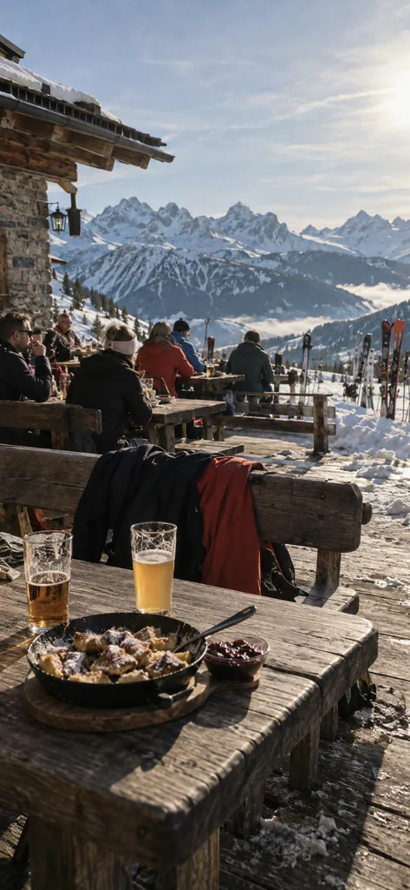
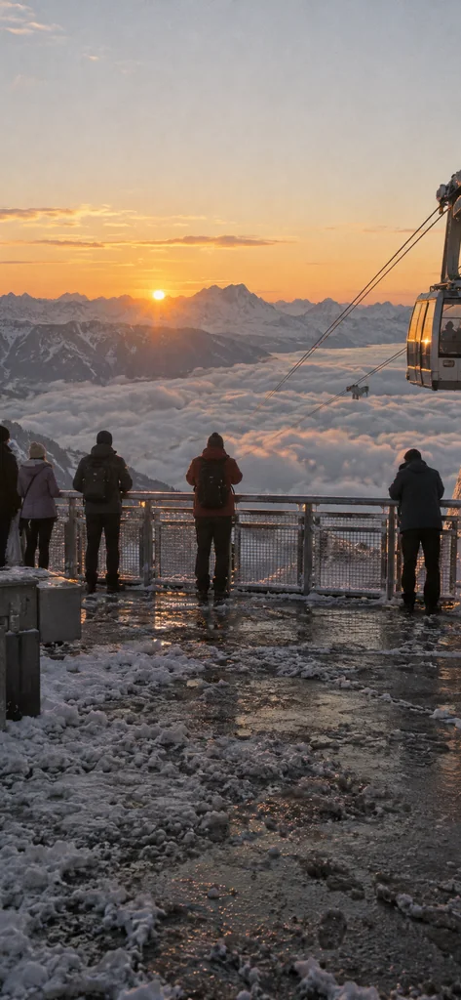

Erlebnisse, sichtbar. Im Winter wie im Sommer.
Ob Pulverschnee oder eine gemütliche Einkehr mit Panorama: Wir betreuen Ihre Kanäle so, dass sich jeder Gast angesprochen fühlt – sportlich unterwegs oder einfach zum Genießen.
Ein Berg für jede Jahreszeit.
- Für wen Bergbahnen und Skigebiete
- Was wir machen Shootings, Reels, Posts und Stories
- Wo Aus Füssen, im ganzen Alpenraum
- Angebot Individuell, nach dem Kennenlernen
Drei Stationen, ein Berg für das ganze Jahr.
-
Winter
Die Gäste kommen. Die Frage ist, zu wem.
Wir zeigen, was Ihren Berg unterscheidet: die erste Fahrt, die Abfahrt, den Blick von oben.
-
Sommer
Der Sommer wächst, wenn man ihn sieht.
Wandern, Biken, Sonnenaufgang: Wir machen den Sommer zum Grund für einen Ausflug.
-
Am Gipfel
Oben wartet mehr als die Aussicht.
Wir zeigen Hütte, Terrasse und Events, bevor Gäste ihren Ausflug planen.
So kann es aussehen
Ihr Berg im Feed.
So können Ihre Beiträge aussehen.

Erste Fahrt Die Kabine über dem Nebelmeer

Sommer am Grat Wandern mit Blick auf den See

Auf der Hütte Kaiserschmarrn mit Aussicht

Sonnenaufgang am Gipfel Mit der ersten Bahn nach oben
Sichtbarkeits-Check
Wie sichtbar ist Ihr Berg?
Drei kurze Fragen. Am Ende sehen Sie, wo Sie stehen und was am meisten bringt.
Ihr Ergebnis
– / 6 Beantworten Sie die drei Fragen.
Ein Selbst-Check, keine Messung. Er zeigt, wo die größten Hebel liegen.
Mit diesem Ergebnis anfragenSprechen wir
Erzählen Sie uns von Ihrem Berg.
Bahnen, Saisons und Ihre Kanäle helfen uns beim ersten Angebot. Wir melden uns innerhalb von drei Werktagen.
Weitere Bereiche